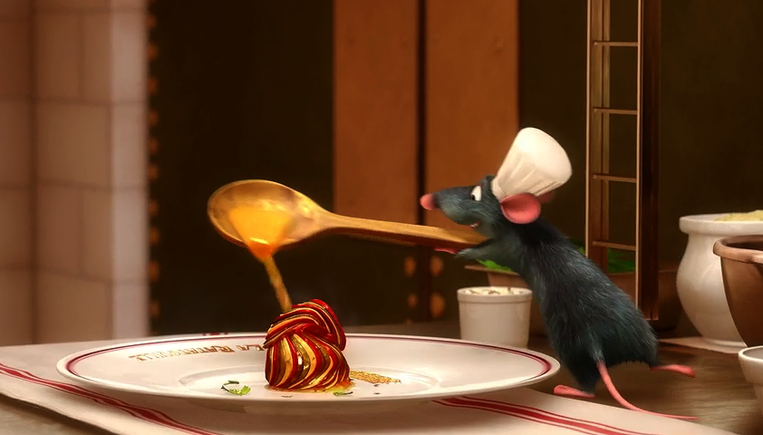

Remy's Ratatouille

The dish Ratatouille shown in the movie is not actually a Ratatouille but a Confit byaldi.Confit byaldi is a variation on the traditional French dish Ratatouille.
With this recipe you can make your own prestigious french cuisine!
Piperade Ingredients
- 1/2 red pepper, seeds and ribs removed
- 1/2 yellow pepper, seeds and ribs removed
- 1/2 yellow pepper, seeds and ribs removed
- 1/2 yellow pepper, seeds and ribs removed
- 1/2 yellow pepper, seeds and ribs removed
- 1/2 cup finely diced yellow onion
- 3 tomatoes (about 12 ounces total weight), peeled, seeded, and finely diced, juices reserved
- 1 sprig thyme
- 1 sprig flat-leaf parsley
- 2/3 cup dark brown sugar
- 1 sprig flat-leaf parsley
- Kosher salt
Vegetable Ingredients
- 1 zucchini (4 to 5 ounces) sliced in 1/16-inch rounds
- 1 Japanese eggplant, (4 to 5 ounces) sliced into 1/16-inch rounds
- 1 yellow squash (4 to 5 ounces) sliced into 1/16-inch rounds
- 4 Roma tomatoes, sliced into 1/16-inch rounds
- 1/2 teaspoon minced garlic
- 2 teaspoons olive oil
- 1/8teaspoon thyme leaves
- Kosher salt and freshly ground black pepper
Vinaigrette Ingredients
- 1 tablespoon extra virgin olive oil
- 1 teaspoon balsamic vinegar
- Assorted fresh herbs (thyme flowers, chervil, thyme)
- Kosher salt and freshly ground black pepper.
Directions
- First lets make the Piperade. We need to roast and remove the skin of the bell peppers. Stove top method – Roast the bell pepper directly on the gas stove burner for 3-4 minutes until completely charred. Remove the bell pepper and place it in a bowl and close it with a tight lid and allow it to rest for 5 minutes. The steam inside the bowl will release the charred skin from the bell pepper. Gently clean the bell pepper in running water and remove any hard charred skin with the help of your fingers. Repeat with other bell peppers. We will need only half of each bell pepper. Chop them. Set aside. Store the remaining bell pepper and use it in salads etc…Oven method – Heat oven to 450 degrees Fahrenheit. Place pepper halves on a foil-lined sheet, cut side down. Roast until skin loosens, about 15 minutes. Remove from heat and let rest until cool enough to handle. Peel and chop finely.
- Now lets get the Tomatoes ready. Boil water in a pan and drop in the ripe tomatoes in boiling water. Boil for half a minute to a minute until the skin of the tomato cracks like the picture shown below. Peel the tomato skin and cut the tomato into half. Remove the seeds and let the juices through a strainer / colander. Reserve the juice. Chop the tomatoes finely. Set aside.
- Combine oil, minced garlic, and onion in medium skillet over low heat until very soft but not browned, about 5 minutes. Add tomatoes, their juices, thyme, parsley, and bay leaf. I did not have fresh herbs. I used dry herbs. Use whatever you have in the kitchen. Simmer over low heat until very soft and very little liquid remains, about 8-10 minutes, do not brown; add peppers and simmer to soften them. Season to taste with salt, discard the bay leaf. Piperade is ready.
- Cut the veggies into thin slices. Reserve tablespoon of piperade mixture and spread remainder in bottom of an 8-inch skillet. For vegetables, heat oven to 350 degrees Fahrenheit. Arrange a strip of alternating slices of vegetables over piperade, overlapping so that 1/4 inch of each slice is exposed. Repeat until pan is filled; all vegetables may not be needed. Now breathe and feel like you are in Napa Valley’s French Laundry kitchen near Chef Thomas Keller. Mix garlic, oil, and thyme leaves in bowl and season with salt and pepper to taste. Sprinkle over vegetables. Cover pan with foil or parchment paper.
- Bake in a 350 F oven until vegetables are tender when tested with a paring knife, about 2 hours. Uncover and bake for 30 minutes more. (Lightly cover with foil if it starts to brown.) If there is excess liquid in pan, place over medium heat on stove until reduced. (At this point it may be cooled, covered and refrigerated for up to 2 days. Serve cold or reheat in 350-degree oven until warm.)
- For vinaigrette, combine reserved piperade, oil, vinegar, herbs, and salt and pepper to taste in a bowl. To serve, heat broiler and place byaldi underneath until lightly browned. Slice in quarters and very carefully lift onto plate with offset spatula. Turn spatula 90 degrees, guiding byaldi into fan shape. Drizzle vinaigrette around plate.
- Serve hot.
Back to receipes